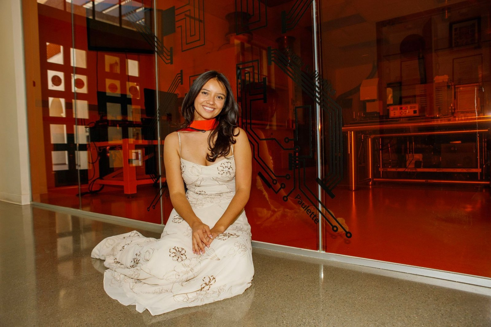
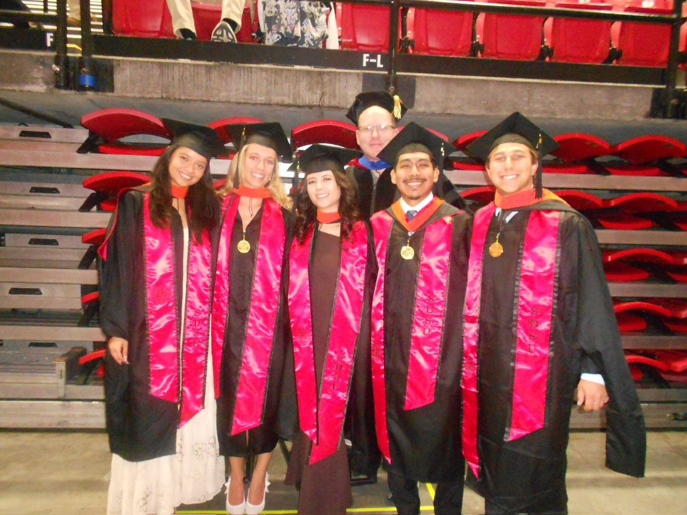

Engineering for People
I'm an engineer who likes building things that make a real difference for the people using them: medical devices, vehicle systems, hardware, software. Along the way that's meant hands-on experience with electrochemical testing, MEMS fabrication, and mechanical design, but the common thread is caring about the human impact more than any one specialty. This site collects the projects I'm proudest of.
VIEW MY WORK →Collect
Build
Improve
Repeat ★
- MECHANICAL
- BIOENGINEERING
- SENSORS
- DEVICES
- RESEARCH
- DESIGN
- PEOPLE
Featured Projects
Experience
Leadership
About


I recently finished my M.S. in Bioengineering at San Diego State University (2026), after earning my B.S. in Mechanical Engineering with a Bioengineering Emphasis (2025). My focus areas are research and development and medical devices, with hands-on experience in electrochemical sensing, MEMS fabrication, and mechanical design. I'm looking for roles in medical device R&D, systems integration, or process engineering, and I'm open to relocation.
Thanks for stopping by!